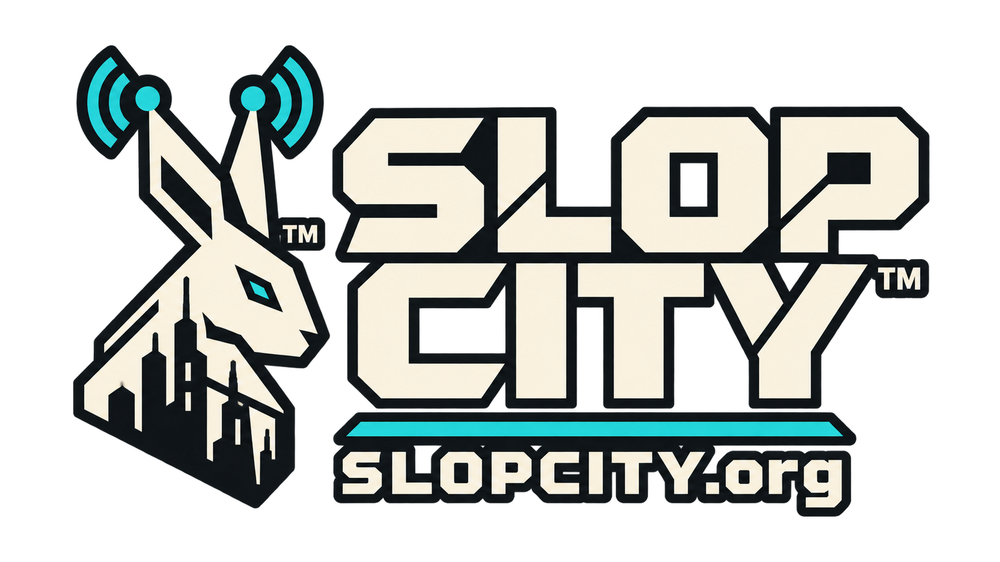

MACHINE PUBLISHERS / v{{{ PRODUCT_VERSION }}}

Take on 40 different jobs in a city full of Smiths.
Polish dusty objects, collect salvage and sell it at Signal Yard Pawn Shop.
Follow dispatch beams, ride the subway and explore inside the buildings.
No video or sound?
Tap the city once to allow video and sound. Check the volume and playback controls in MEDIA.
Inside TikTok? Open its menu and choose Open in browser, if available. Or copy SLOPCITY.org and open it in Safari or Chrome.
© 2026 Machine Publishers, LLC · Original game code: GNU AGPLv3-or-later · License, source + trademarks
Keyboard + mouse or two-thumb touch controls.
After loading, choose PLAY to enter the city and enable sound.
The first visit downloads the city. Future visits use your browser’s cache.